Menu: Estoque > Cadastros · Situação do manual: Em ajuste (tela testada em 18/11/2026, com 60 prints; parcial: falta excluir uma conversão em uso (bloqueado no teste), o perfil sem permissão e a pesquisa com mais de 100 registros) · Fonte dos prints: versão nova.
Como ler este manual: o que está escrito aqui foi visto na tela em 18/11/2026, com o administrador e a Produção ligada neste ambiente. O que o teste não alcançou vem marcado "não verificado" ou "não foi possível testar" e está na lista "Prints que faltam". O que ainda é leitura do código (a base do manual antes do teste) diz "pelo código".
Para que serve
A Conversão de Unidade diz quantas unidades do estoque cabem em uma "apresentação" (por exemplo, uma caixa com 1.000 comprimidos tem fator 1000 e unidade de estoque COMPRIMIDO) e, quando o módulo de Produção está ligado no ambiente (como neste ambiente de teste), quanto vale uma unidade de produção em unidades de estoque. Não é um cadastro simples de código e descrição: tem tipo, fator, unidade do estoque e unidade de produção. No código o cadastro se chama "Apresentação do item"; o usuário vê "Conversão de Unidade".
Antes de começar (o que precisa existir)
| O que precisa existir | Para quê | Onde se cadastra |
|---|---|---|
| Usuário administrador (perfil 1) | Só ele abre o Estoque na versão nova (DV-EST-N-001) | Principal > Administração |
| Unidade de Medida ativa | Campo Unidade do Estoque* do formulário e filtro Unidade da lista | Cadastros > Unidade de Medida |
| O fator combinado com o fornecedor e o almoxarifado | Entra no custo e na quantidade do recebimento | Decisão da área |
| Módulo de Produção ligado no ambiente (só para o tipo PRODUÇÃO) | Neste ambiente está ligado: o campo Tipo oferece ESTOQUE e PRODUÇÃO. Sem ele o Tipo ficaria travado em ESTOQUE (pelo código; não testado) | Configuração do ambiente (TI) |
Passo a passo
- Abrir a tela. No menu Cadastros do Estoque, clique em Conversão de Unidade. O título é "CONVERSÃO DE UNIDADE" e o quadro Pesquisa traz Apresentação, Unidade (TODOS e o código de cada unidade, sem a descrição: BS, CX, CP, KG...) e Ativo (TODOS, SIM, NÃO), os botões PESQUISAR e LIMPAR e o link Incluir. A grade só aparece depois de pesquisar.

- Pesquisar. Clique em PESQUISAR. A grade mostra Tipo de Conversão, Apresentação, Fator de Conversão, Unidade Estoque e Ativo, mais os ícones lápis (EDITAR), lixeira (EXCLUIR) e LOG, 15 linhas por página, com "Página 1 de 3" (36 linhas no total, conferido paginando), Anterior e Próxima acima e abaixo da grade. IMPRIMIR e EXCEL aparecem depois da pesquisa.
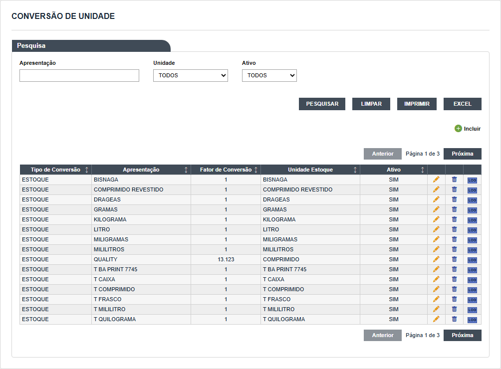
O texto de Apresentação vai em maiúsculas e a procura acha o trecho dentro do nome (caixa em minúsculas achou "T CAIXA"). Unidade filtra pelo código (KG achou KILOGRAMA). Sem resultado: "A pesquisa não retornou nenhum resultado." LIMPAR esvazia os filtros e a grade.
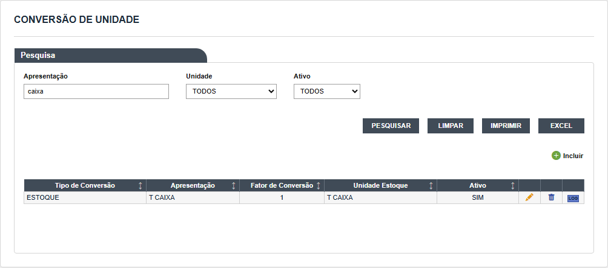
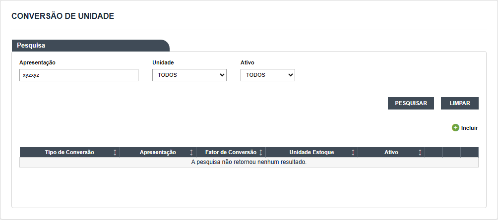

- Ordenar. Clique no título de uma coluna; de novo, inverte. Visto na tela: Apresentação, Fator de Conversão e Unidade Estoque ordenam de verdade nos dois sentidos (no fator, o 1 vem primeiro e, no segundo clique, o maior primeiro; na unidade, BISNAGA, COMPRIMIDO...). Tipo e Ativo mostram a seta, mas a primeira página só tinha ESTOQUE e SIM, então a ordem não mudou (não dá para concluir). O erro de servidor que o legado dava ao ordenar por "Unidade Estoque" não acontece. A suposição do manual anterior, de que Tipo, Fator e Unidade cairiam na ordem por Apresentação, estava errada.


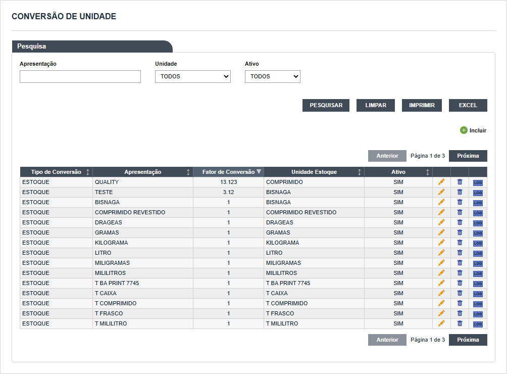
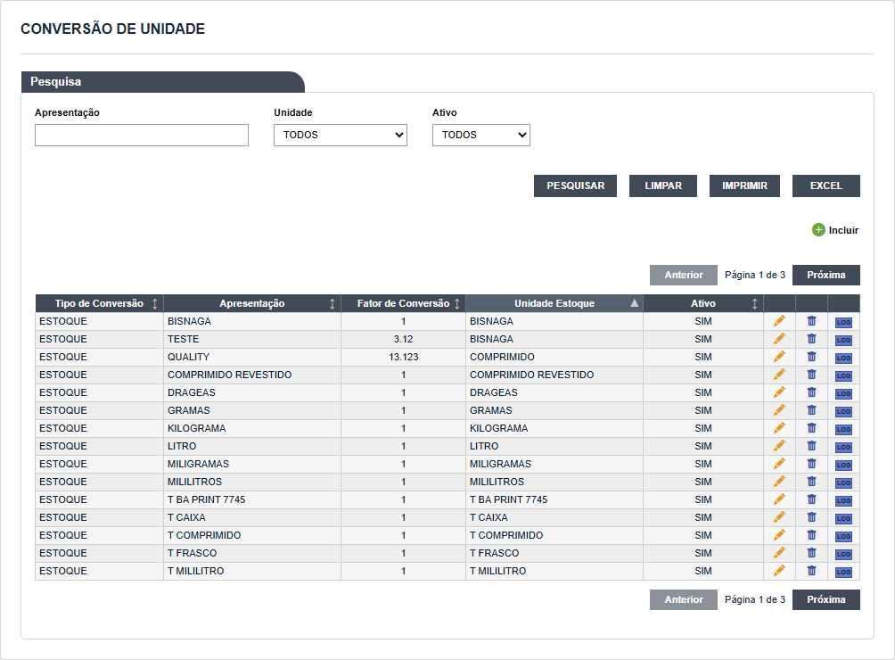

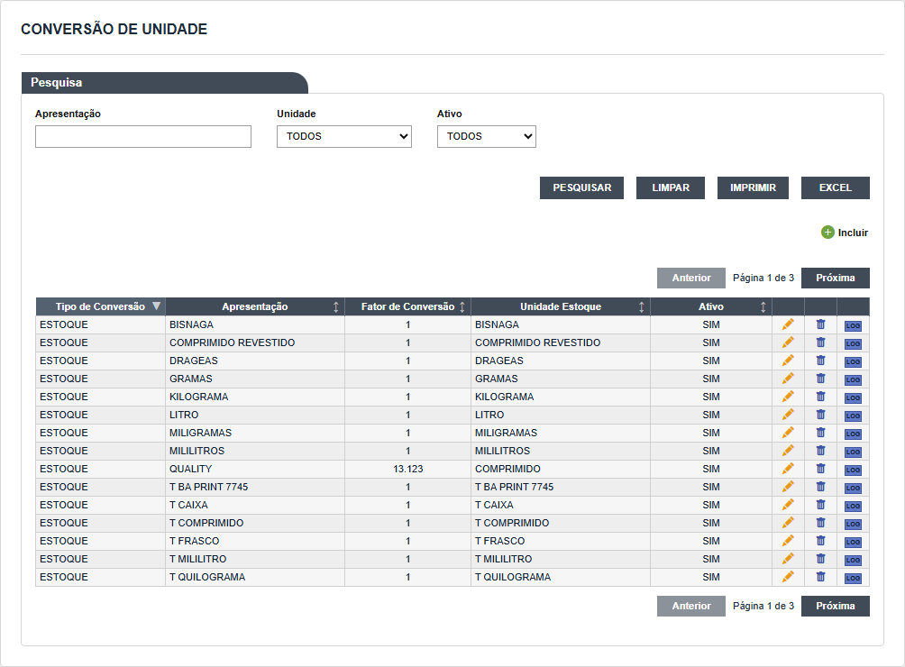


- Incluir uma conversão de estoque. Clique em Incluir. O formulário "Dados" traz Data do Cadastro (travada, já com a data e a hora em que o formulário foi aberto), Tipo* (ESTOQUE e PRODUÇÃO liberados neste ambiente), Apresentação* (até 30 caracteres), Unidade de Produção (travada no tipo ESTOQUE), Unidade do Estoque* (lista "SELECIONE" mais "código - descrição"), Fator de Conversão* e Ativo* (Sim já marcado).
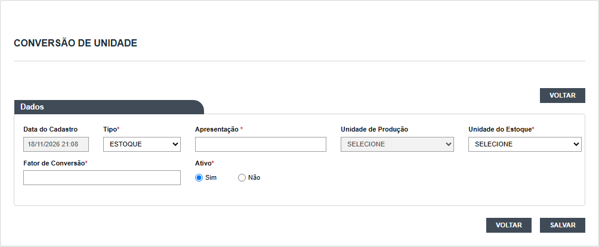
- Atenção ao fator. O campo tem máscara de três casas decimais e os números entram da direita para a esquerda: digitar
1mostra0,001, digitar1000mostra1,000e, para obter1000,000, é preciso digitar1000000. O campo guarda no máximo 8 dígitos (maior valor99999,999;123456789ficou 12345,678 e99999999ficou 99999,999, o 9º dígito é descartado). É a mesma máscara do legado (DV-EST-002) e da família do DV-EST-N-022. O fator zero não grava: o campo apaga os zeros digitados, fica vazio e a tela diz "O Fator de Conversão é obrigatório!" (o manual anterior dizia que o zero era aceito).
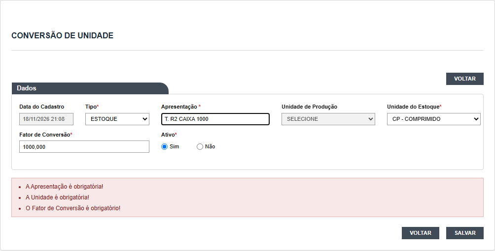
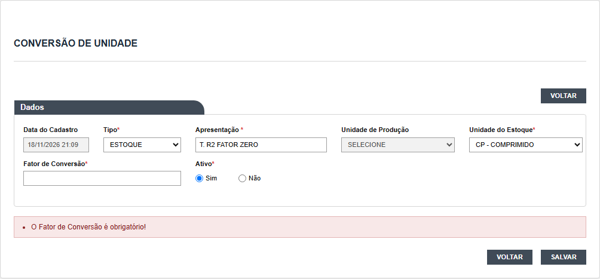
- Salvar. Clique em SALVAR. A tela pergunta primeiro "Confirma a inclusão do item?" (título "Confirmação"; a palavra "item" aparece mesmo neste cadastro, DV-EST-N-027) e só depois do SIM confere os campos. Sem preencher nada, a lista vermelha mostra "A Apresentação é obrigatória!", "A Unidade é obrigatória!" e "O Fator de Conversão é obrigatório!" ("O Ativo é obrigatório!" não aparece porque Sim já vem marcado).

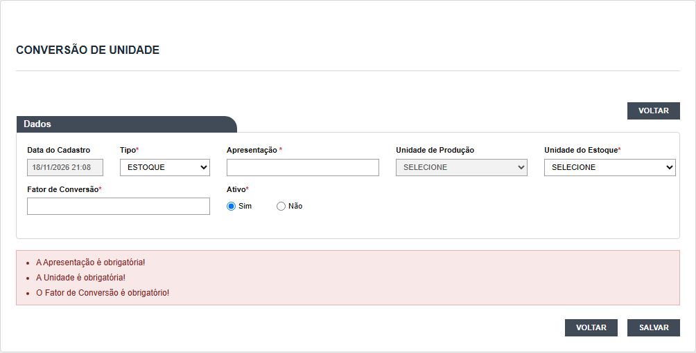
Estando tudo certo, a pergunta e a janela "Alerta" com "Inclusão realizada com sucesso!"; OK volta para a lista. A conversão gravada com 1000000 mostra "1000" na lista.
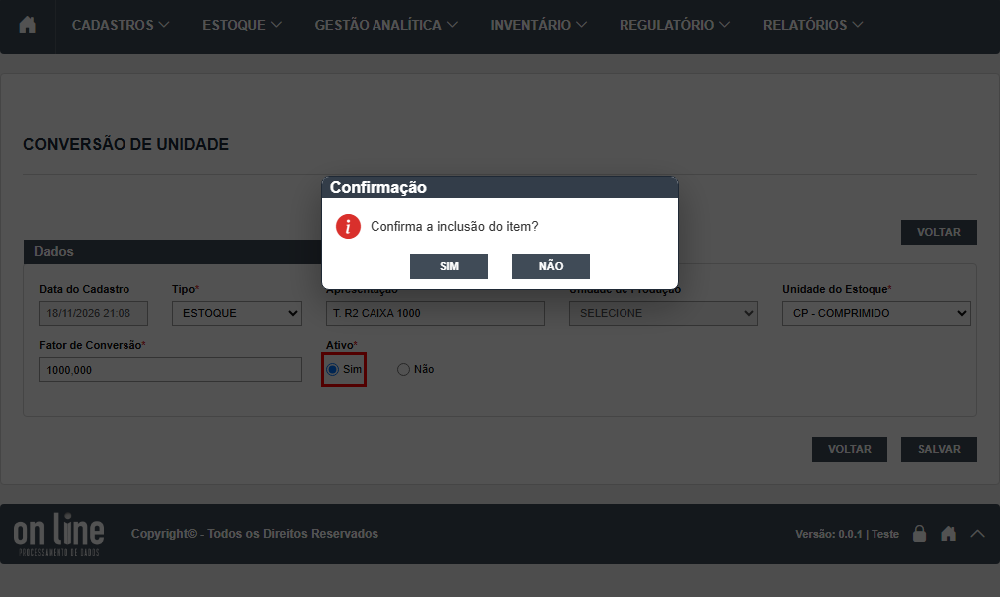


- Incluir uma conversão de produção. Em Tipo, escolha PRODUÇÃO. A Unidade de Produção é liberada (lista "SELECIONE" mais "abreviatura - nome") e a Apresentação fica travada e é preenchida sozinha com a unidade escolhida (por exemplo "g - GRAMA"). Sem a unidade de produção, as pendências são "Unidade de Produção é obrigatória!", "A Unidade é obrigatória!" e "O Fator de Conversão é obrigatório!". Repetir a mesma combinação de unidades é recusado: "Já existe uma conversão cadastrada com os parâmetros informados!".

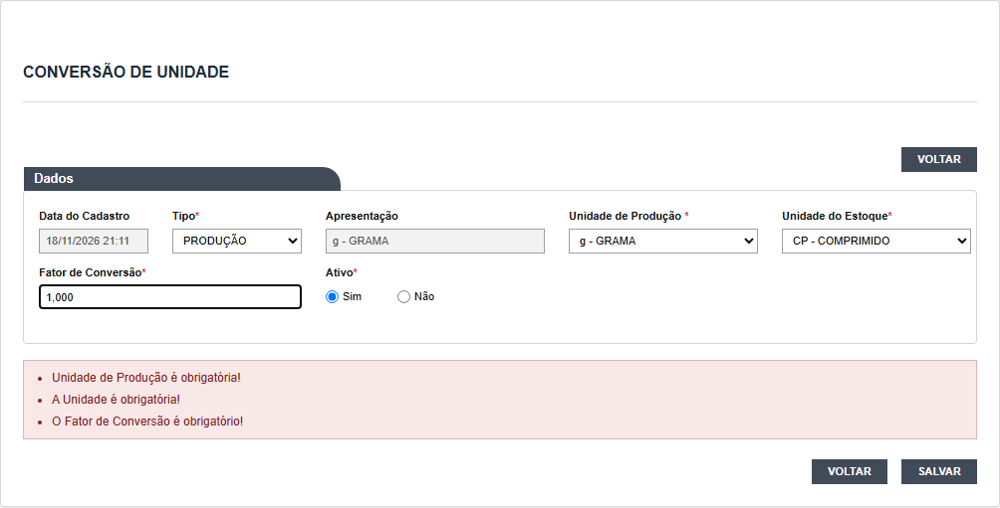


- Alterar. Na lista, clique no lápis. Aparece o quadro Justificativa* (obrigatória). Mude o que precisa (nome e fator foram alterados no teste), SALVAR e SIM ("Confirma a alteração do item?"); sem justificativa, depois do SIM, "A Justificativa é obrigatória!"; com ela, "Alteração realizada com sucesso!". Atenção: mudar o fator de uma conversão já usada muda o custo e a quantidade dos próximos recebimentos, e a tela não avisa (do código do legado; o uso não pôde ser testado). A tela deixou trocar o Tipo para PRODUÇÃO na edição (a Apresentação trava e a Unidade de Produção libera); a gravação dessa troca não foi feita.


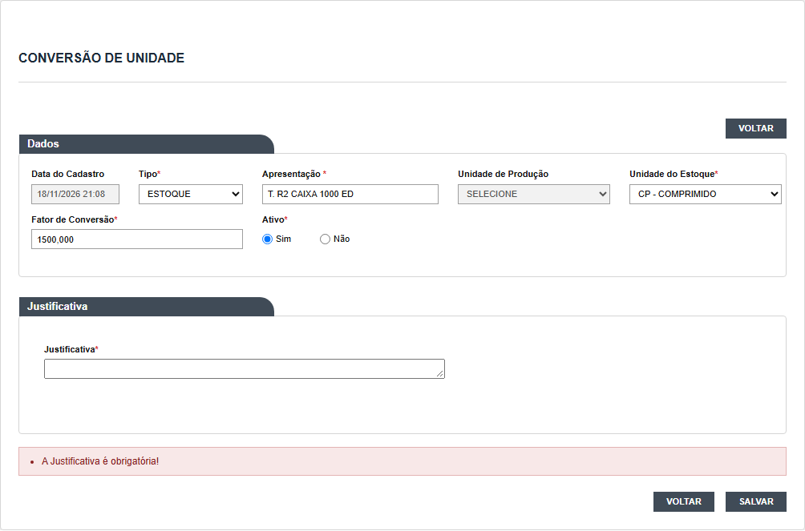

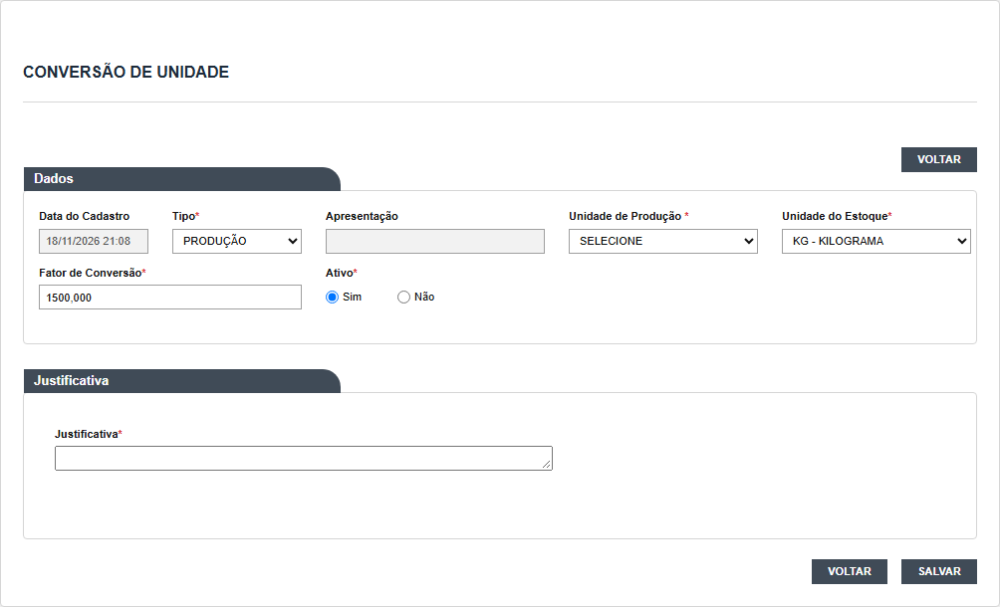
- Inativar e reabrir. Marque Ativo = Não com justificativa, SALVAR e SIM: "Alteração realizada com sucesso!" e a lista mostra ATIVO = NÃO. O registro inativo reabre todo travado, menos Ativo e Justificativa: só dá para reativar.
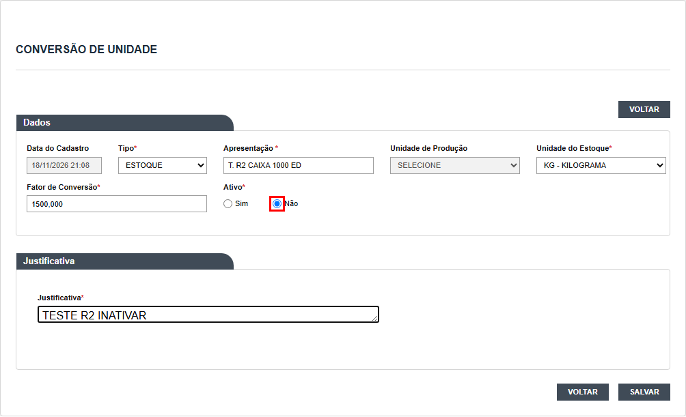


-
Excluir. Na lista, clique na lixeira. A lista é trocada pelo quadro de exclusão (mostra Código e Descrição e pede a Justificativa*). Sem justificativa, a pergunta "Confirma a exclusão do item?" vem antes e, depois do SIM, a faixa "A Justificativa é obrigatória!". Com justificativa, a exclusão de uma conversão sem uso deu "Ocorreu um erro interno no servidor." e o registro continuou na lista (a falha repete em um segundo registro, o de código 38; DV-EST-N-070). VOLTAR desiste.

Quadro de exclusão · clique para ampliar 
Exclusão: pergunta sem justificativa · clique para ampliar 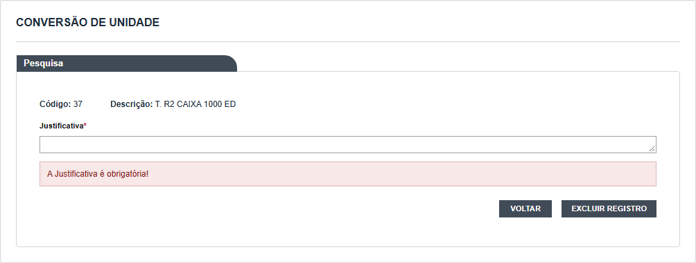
Exclusão sem justificativa recusada · clique para ampliar 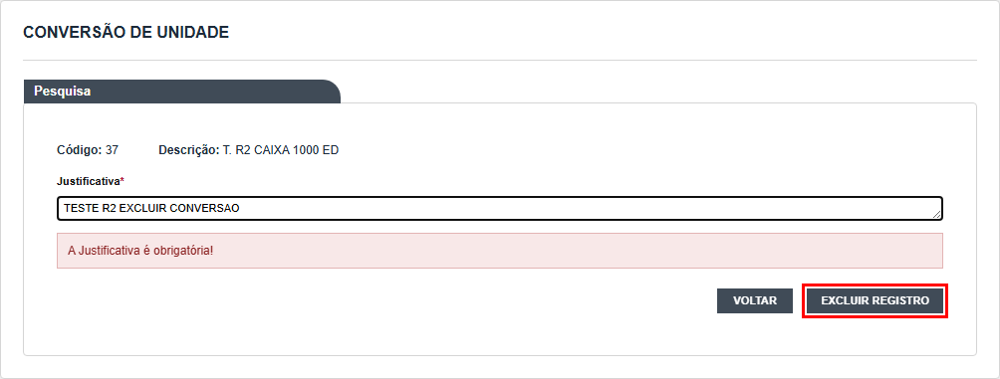
Exclusão com a justificativa preenchida · clique para ampliar 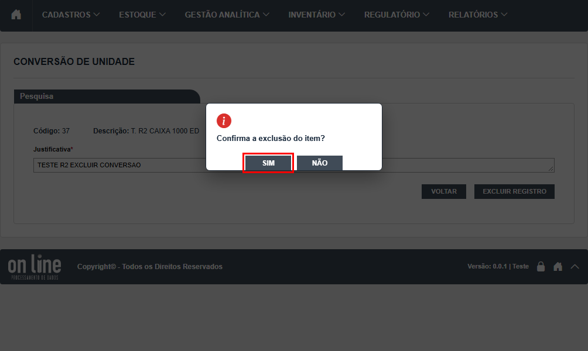
Exclusão: pergunta de confirmação · clique para ampliar 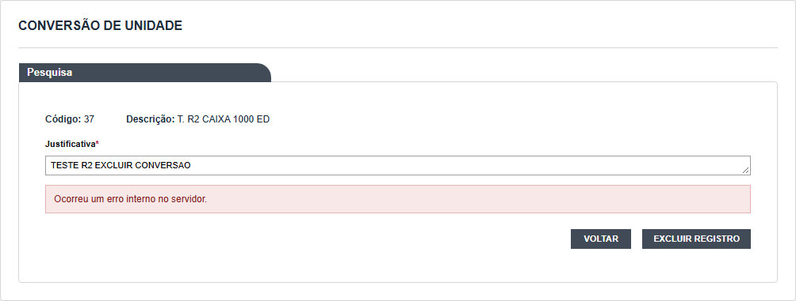
Exclusão: erro interno do servidor · clique para ampliar 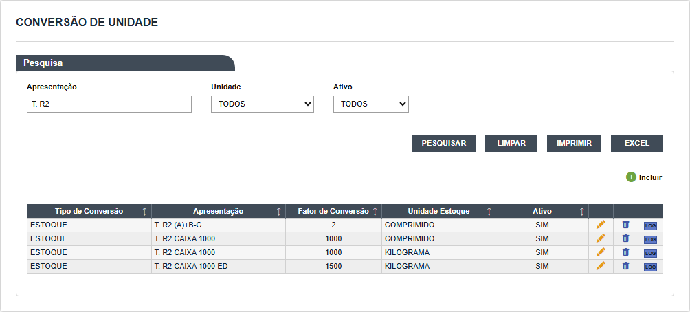
Repetição em outro registro: lista filtrada antes de excluir o código 38 · clique para ampliar 
Repetição em outro registro: o mesmo erro interno · clique para ampliar -
Histórico. Na lista, clique em LOG. A janela "Log Alteração - Conversão de Unidade" mostra, a cada alteração, Item (campo), Dado Antigo, Dado Novo, Data, Hora, Usuário (pelo nome, "ADMINISTRADOR T") e a Justificativa; é paginada, 4 registros por página, do mais novo para o mais antigo, e mostra a linha "INCLUSÃO DO REGISTRO". Foram vistas linhas de QUANTIDADE (o dado antigo vem com 10 casas,
1000,0000000000, e o novo sem,1500), NOME APRESENTAÇÃO, UNIDADE DE MEDIDA e ATIVO. FECHAR fecha. Mudar só o Tipo não foi testado.
Histórico: fator e nome · clique para ampliar 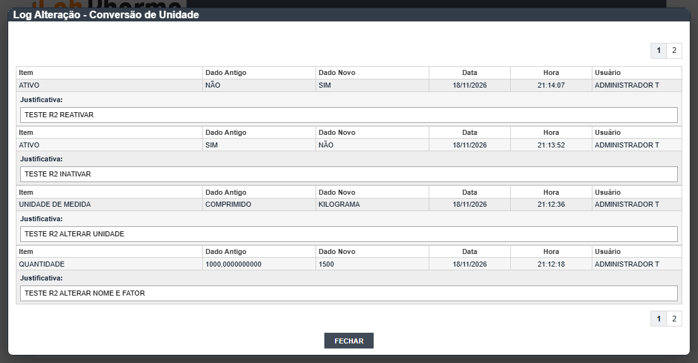
Histórico: unidade e ativo (página 1 de 2) · clique para ampliar -
Imprimir e Excel. IMPRIMIR abre uma janela com o "RELATÓRIO DE CONVERSÃO DE UNIDADE" (título, data, usuário "ADMINISTRADOR T", "Filtro Exibir Tudo" e as colunas APRESENTAÇÃO, FATOR CONVERSÃO, UNIDADE MEDIDA, ATIVO). EXCEL baixa
conversao_unidade_AAAAMMDD_HHMMSS.csv: um CSV com ponto e vírgula e aspas, não uma planilha, com as colunas Apresentação, Fator de Conversão, Unidade e Ativo (sem o Tipo); tem 35 linhas de dados enquanto a tela mostra 36 (dúvida registrada).
Relatório impresso · clique para ampliar 
Tela depois do EXCEL · clique para ampliar
Ícones e botões da lista
| Ícone ou botão | O que faz | Quando aparece |
|---|---|---|
| PESQUISAR | Lista os registros pelo filtro | Sempre; desabilitado sem a função de consultar |
| LIMPAR | Esvazia filtros e lista | Sempre |
| IMPRIMIR | Abre o relatório e chama a impressão | Depois de pesquisar com resultado, para quem pode imprimir |
| EXCEL | Baixa um arquivo CSV | Idem |
| Incluir (sinal de mais) | Abre o formulário vazio | Sempre; desabilitado sem a função de incluir |
| Lápis (EDITAR) | Abre o registro | Em cada linha; desabilitado sem a função de alterar |
| Lixeira (EXCLUIR) | Abre o quadro de exclusão com justificativa | Em cada linha; desabilitado sem a função de excluir |
| LOG | Abre o histórico | Em cada linha; desabilitado sem a função de consultar o log |
| Anterior / Próxima | Mudam de página ("Página N de M", 15 por página) | Quando há mais de uma página |
| Títulos das colunas | Ordenam (ver passo 3) | Sempre |
Botões e ações
PESQUISAR, LIMPAR, IMPRIMIR, EXCEL, Incluir, lápis, lixeira, LOG, Anterior, Próxima, EXCLUIR REGISTRO, VOLTAR (quadro de exclusão), SALVAR, VOLTAR (alto e pé do formulário), SIM e NÃO (confirmações), OK (depois do sucesso), FECHAR (histórico).
Mensagens do sistema
"A pesquisa não retornou nenhum resultado." · "Confirma a inclusão do item?" · "Confirma a alteração do item?" · "Confirma a exclusão do item?" · "Inclusão realizada com sucesso!" · "Alteração realizada com sucesso!" · "Exclusão realizada com sucesso!" · "A Apresentação é obrigatória!" · "Unidade de Produção é obrigatória!" · "A Unidade é obrigatória!" · "O Fator de Conversão é obrigatório!" · "Fator de conversão inválido!" · "O Ativo é obrigatório!" · "A Justificativa é obrigatória!" · "Já existe uma conversão cadastrada com os parâmetros informados!" · "Exclusão inválida, existem referências com outras tabelas." · "Não foi possível carregar as conversões de unidade." · "Não foi possível carregar a conversão de unidade." · "Não foi possível salvar a conversão de unidade." · "Não foi possível excluir a conversão de unidade." · "Não foi possível carregar o log de alteração." · "Não foi possível gerar o relatório." · "Não foi possível exportar para Excel." · "O navegador bloqueou a janela do relatório." · "Não existe log de alteração para este registro."